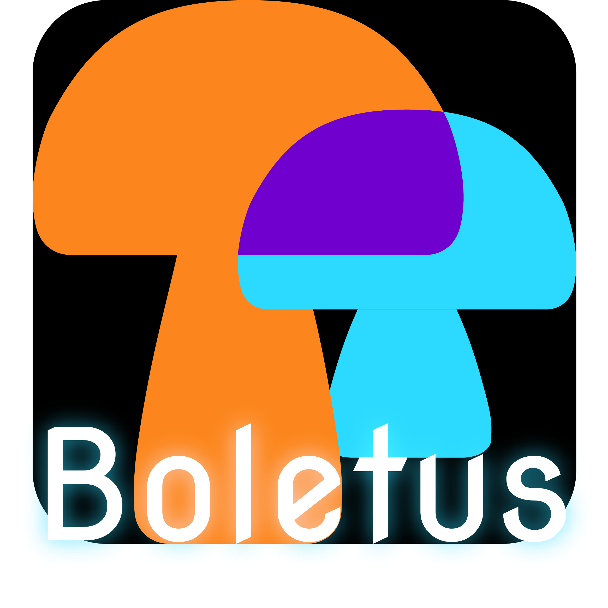
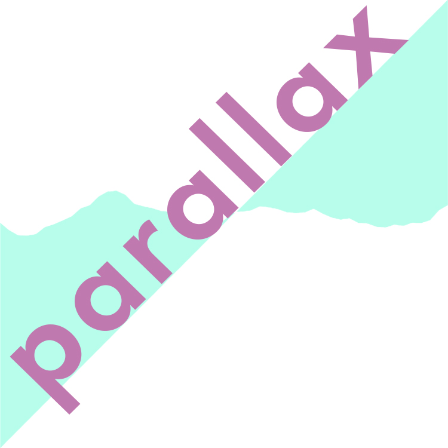
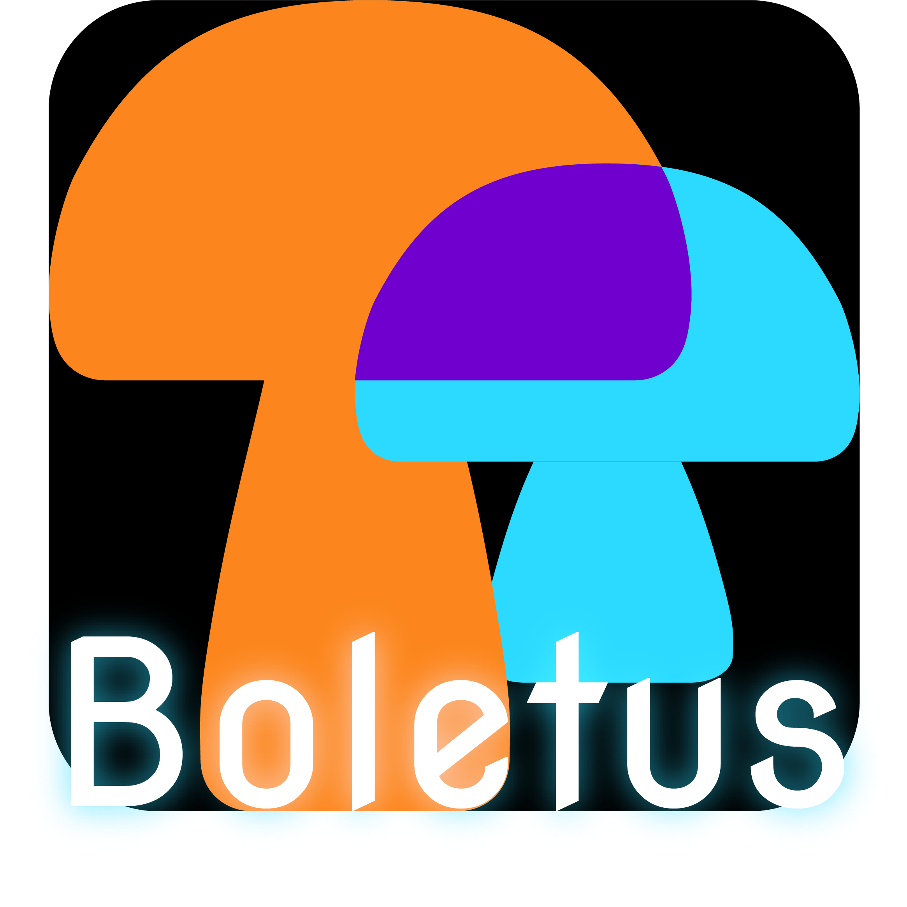
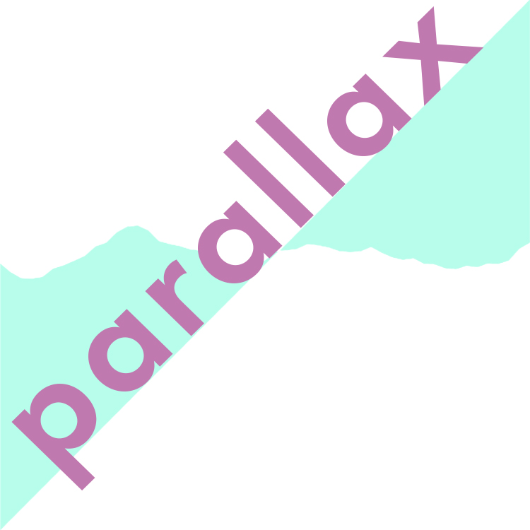

The NEW.WAV exhibition features social sonic interfaces through means of interactive installations. These experiences incorporate musical engagements through multi-user participation.
Curated by Junior BFA of Design and Technology | Undergraduate Class of 2020.